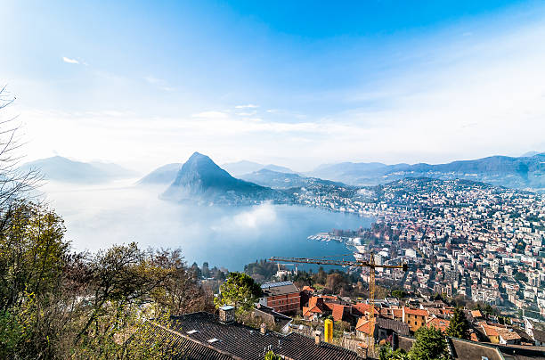

Your next place to travel is:
Lugano
You don´t wanna loose these:
Discover 3 unmissable destinations in Lugano.
Lugano is a charming city located in southern Switzerland, in the canton of Ticino, where Italian is the official language. Known for its Mediterranean lifestyle, it combines Italian charm with Swiss precision, offering visitors a unique experience of natural beauty, culture, and sophistication.
1.Moutain San Salvatore
Known as the "Sugarloaf Mountain of Switzerland," Mount San Salvatore offers one of the most spectacular views of Lake Lugano and the surrounding Alps. The ascent is made by funicular railway departing from the Paradiso region, and the journey itself is part of the experience. At the top, hiking trails, a restaurant serving local cuisine, and breathtaking viewpoints complete the visit.
Good For:
- Culture
2.Lake of Lugano
The heart of the city, the lake is ideal for relaxing strolls, walks along the shores, picnics in Parco Ciani, or a refreshing swim at beaches like Lido di Lugano. Boat trips connect Lugano to charming villages such as Gandria and Morcote. The sunset over the tranquil waters is a magical moment.
Good For:
- For Family
3.Monte Brè
Considered the sunniest spot in Switzerland, Mount Brè offers panoramic views of the city, the lake, and the Italian border. Accessible by funicular or hiking trails, the area features hiking trails, picnic areas, and the picturesque artists' village of Brè.
Good For:
- Culture
Lugano, nestled in Switzerland's Italian-speaking Ticino region, blends Mediterranean charm with Swiss excellence, creating a unique cultural identity. This historic city evolved from a medieval trading center to a modern financial and tourist hub. Its stunning natural attractions include Monte San Salvatore (912m) and Monte Brè (925m), both offering breathtaking panoramic views, and the picturesque Lake Lugano, a glacial lake perfect for boat tours and lakeside strolls. These landmarks have shaped Lugano into a sophisticated resort town celebrating natural beauty and rich heritage.